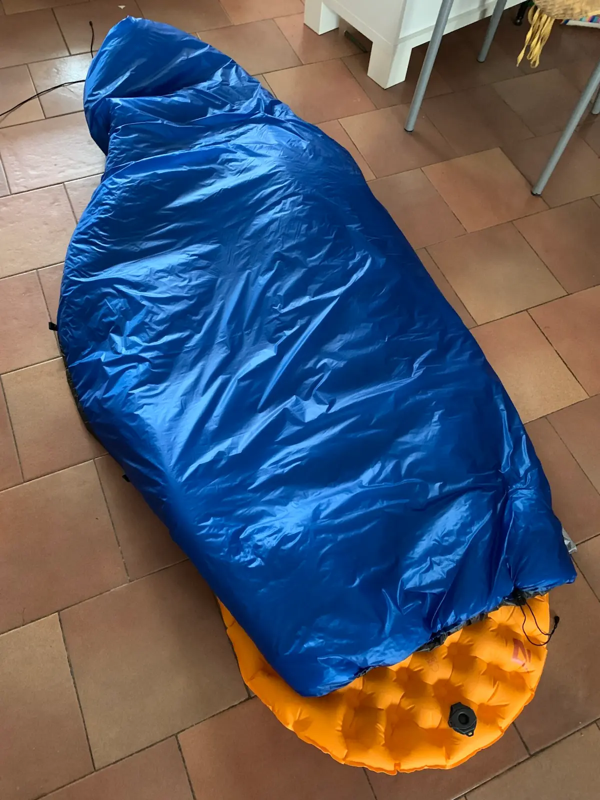
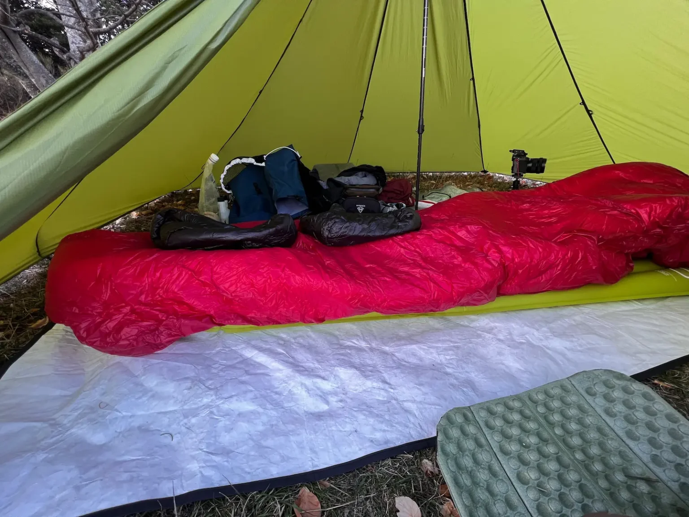
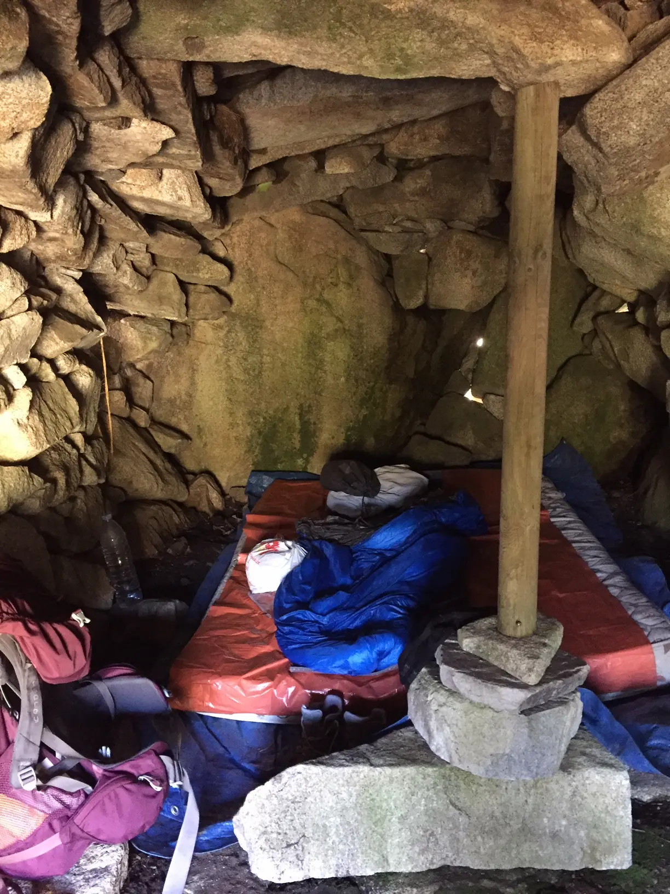

130x185 cm
Poids2 / Volume3| -1 °C | 2 °C |
|---|---|
| 600 g 8 l |
520 g 6 l |
⭐⭐⭐⭐⭐ (5 avis client)
Le quilt Oro n'est plus disponible pour le moment.
Couette de randonnée ultralégère et polyvalente avec garnissage synthétique en Climashield® APEX.
Garnissage synthétique en Climashield® APEX avec traitement Aquaban®.
Température limite de confort de -1 °C (APEX 200) ou 2 °C (APEX 167).
Performant même dans des conditions humides et mouillées.
Tissu ultraléger (22 g/m2) en taffetas de Nylon 10D respirant et déperlant.
Extérieur bleu roi / vert olive / rouge cramoisi, intérieur gris anthracite.
Sensation douce au toucher et excellente résistance au vent et à l’eau.
Le Quilt Oro s'adapte à différents temps et climats et vous apporte un confort « comme à la maison » lors de vos nuits en bivouac :
Recommandation : choisissez une longueur d'environ 20 cm de plus que votre taille.
130x185 cm
Poids2 / Volume3| -1 °C | 2 °C |
|---|---|
| 600 g 8 l |
520 g 6 l |
130x200 cm
Poids2 / Volume3| -1 °C | 2 °C |
|---|---|
| 650 g 9 l |
560 g 6,5 l |
140x200 cm
Poids2 / Volume3| -1 °C | 2 °C |
|---|---|
| 700 g 10 l |
600 g 7 l |
140x215 cm
Poids2 / Volume3| -1 °C | 2 °C |
|---|---|
| 750 g 11 l |
640 g 7,5 l |
1 Largeur x longueur en cm. La largeur de la couette au niveau des pieds est de 110 cm
pour
les tailles Regular et Long, et de 100 cm pour les autres tailles.
2 Le poids du
Climashield® APEX peut varier de ±10% en raison des écarts de production, ce qui entraîne des
variations
de ±30 grammes sur le poids des couettes.
3 Volume en litre de la couette compressée
(mesure approximative).
Vous ne savez pas quelle taille ou quelle température choisir ? Vous avez besoin de plus
d'informations
?
Les réponses à vos questions sont sûrement dans la FAQ.
100% des clients recommandent ce produit

Reçu pour l’été 2023, après de très précieux conseils de Loïc, j’ai pu le tester sur 2 occasions : un trek et du bikepacking, quelque peu disons…humides. Et tout l’intérêt de l’APEX s’est fait immédiatement jour : son pouvoir isolant reste stable malgré l’humidité et il sèche rapidement (je dors sous tente mais la condensation était rude). Le Quilt Oro est super ! La Footbox est idéalement proportionnée, l’Oro est compressible à souhait (dans un sac étanche de 8L) pour passer dans le sac à dos ou la sacoche du vélo, léger, bien pensé au niveau des attaches pour parfaitement faire corps avec le matelas et l’ajuster même dans l’obscurité, etc. Et en plus, fabrication française ! 🇫🇷 🐓
Après plusieurs treks (gr30, gr400, gr20) ainsi que plusieurs nuits par ci par là, avec le quilt
Oro en apex 167, je suis en mesure d’affirmer que c’est un super produit, très bien
fini, facile d’entretien, à séchage ultra rapide.
Merci Loïc
Mai 2023, je me lance à l’assaut du chemin de Stevenson, avec dans mon sac de trop longues années d’une hygiène de vie pas top, et de ses 25 kilos superflus. Un jour, transi, grelottant, ayant essuyé averses de neige, grésil et pluie à l’horizontale toute la matinée, je me suis abrité sous l’auvent d’une ferme abandonnée. Immédiatement cette sensation d’être exposé à un chauffage infrarouge, d’abord dans les zones non froides, puis très rapidement, une vraie sensation de confort et de barrière franche entre le monde hostile et moi ! Bref, très heureux d’être tombé sur le site de Loïc !

J’ai eu l’occasion de tester pas mal de couettes/quilts en apex (EE, GramXPert, Orri…), et je
dois avouer que la Oro se situe en haut du panier !
La réalisation est très soignée, les
finitions parfaites, les points de couture parfaitement réalisés…
Le système d’attache est
astucieux avec les noeuds sur les élastiques permettant un montage même dans l’obscurité, le
cordon de serrage autour du cou est inséré dans un ourlet afin de ne pas avoir de gêne une fois
serré, le zip de la footbox se manipule très facilement…
Et cerise sur le gâteau : c’est
une réalisation française ! 🇫🇷
Cette couette va me suivre durant de nombreux bivouacs
!
Merci encore Loïc ! 🙏👌

Je suis fan du Quilt Oro !
Il a changé ma vie de randonneuse, car il a toutes les qualités
que l’on recherche lorsqu’on dort dehors : légèreté dans le sac, chaleur quand on est enroulé
dedans, séchage rapide en cas de rosée matinale. J’ai acheté le mien il y a 3 ans, il ne quitte
plus mon sac à dos. Je précise que je dors à la belle étoile, dans des orri ou cabanes (selon le
temps et les possibilités des lieux), parfois en tente, entre 1500 et 2300 m d’altitude, en
été.
Je recommande vivement le Quilt Oro, je vais d’ailleurs en offrir un prochainement à
une personne chère.